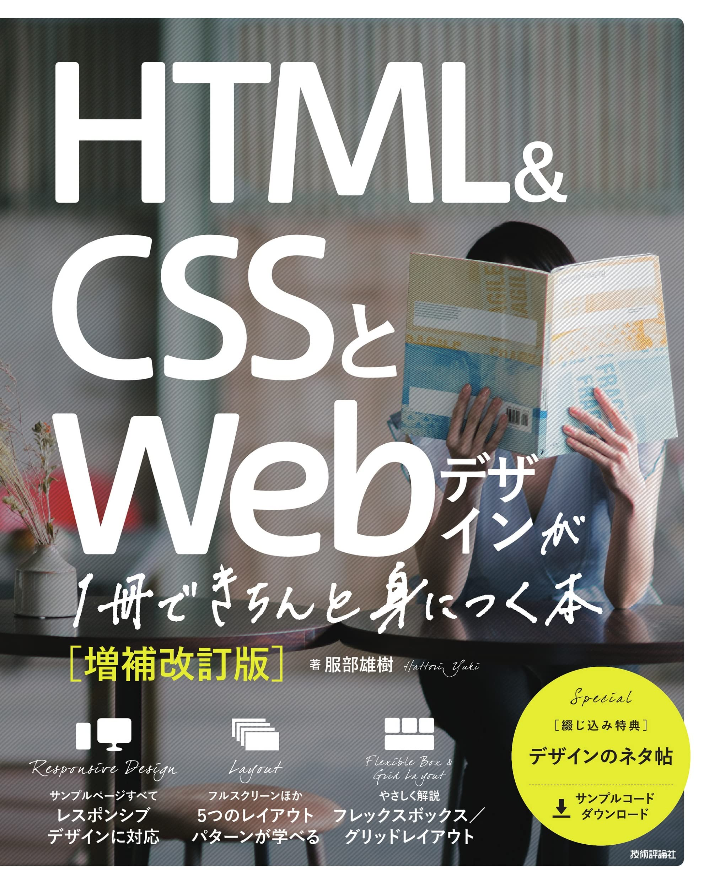
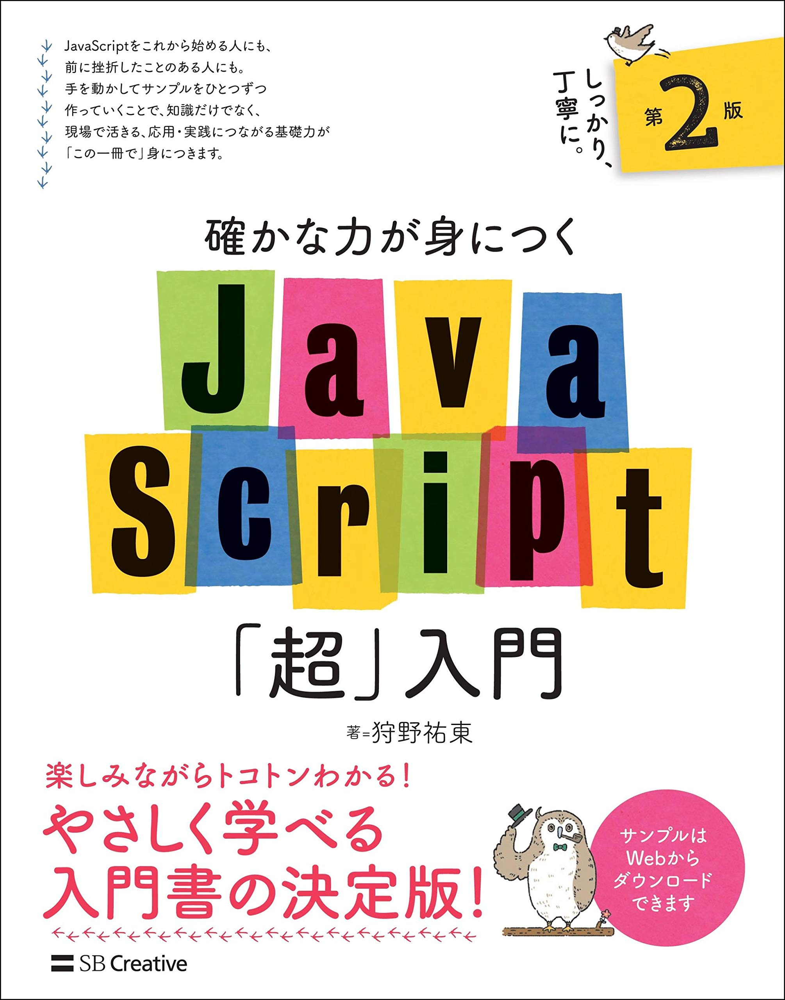
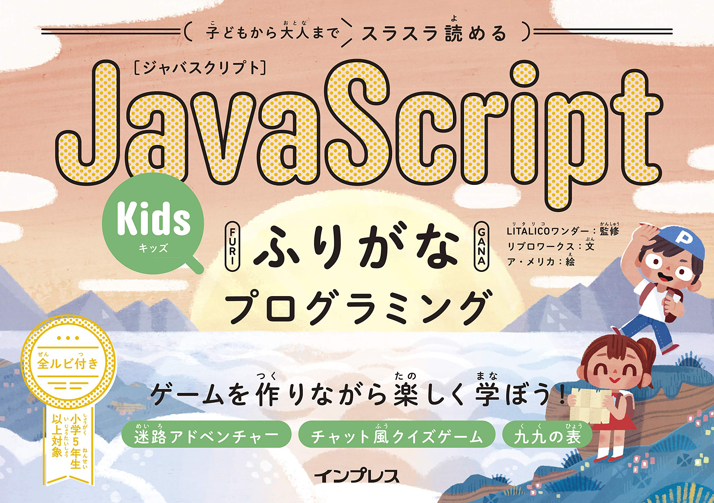

WORKS
勉強歴
-

- HTML&CSSとWebデザインが1冊できちんと身につく本[増補改訂版]
- エスプレッソとミルク、この組み合わせに勝るものはなかなか見つかりません。ホッとしたいとき、やっぱりラテが欲しくなる。
-

- 確かな力が身につくJavaScript「超」入門 第2版
- コーヒーに合うお菓子を追及して生まれた当店の大人気メニュー。数量・季節ともに限定のため、見つけたらぜひお試しを。
-

- 子どもから大人までスラスラ読める JavaScriptふりがな...シリーズ)
- コーヒーに合うお菓子を追及して生まれた当店の大人気メニュー。数量・季節ともに限定のため、見つけたらぜひお試しを。